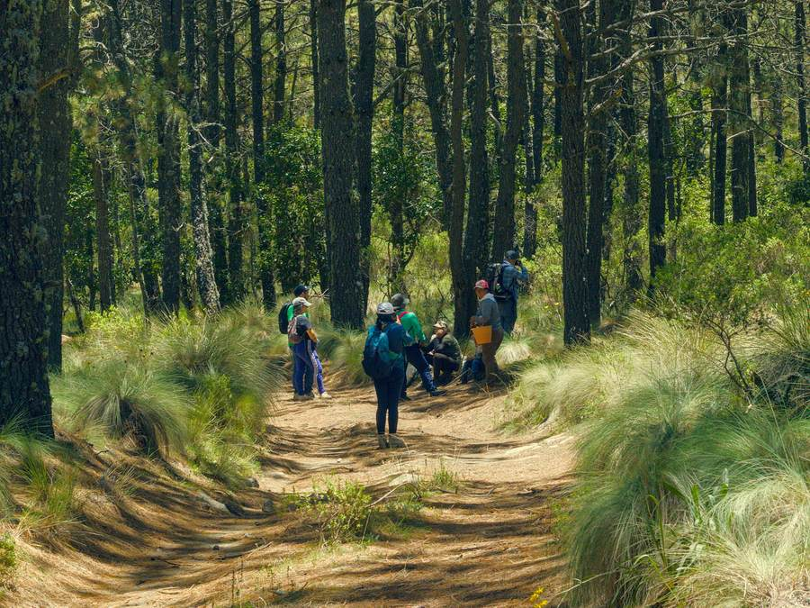
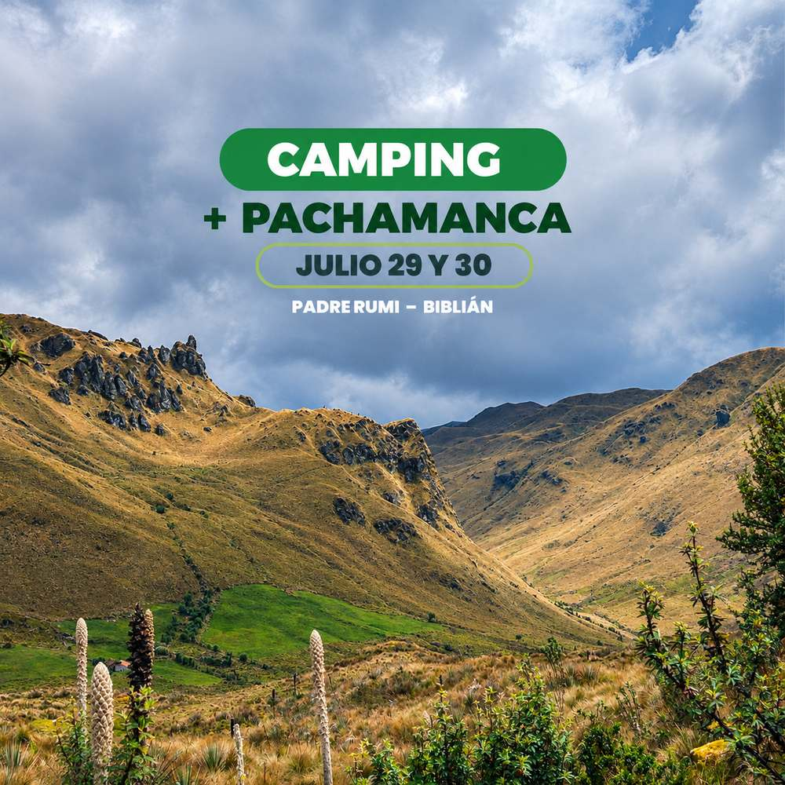
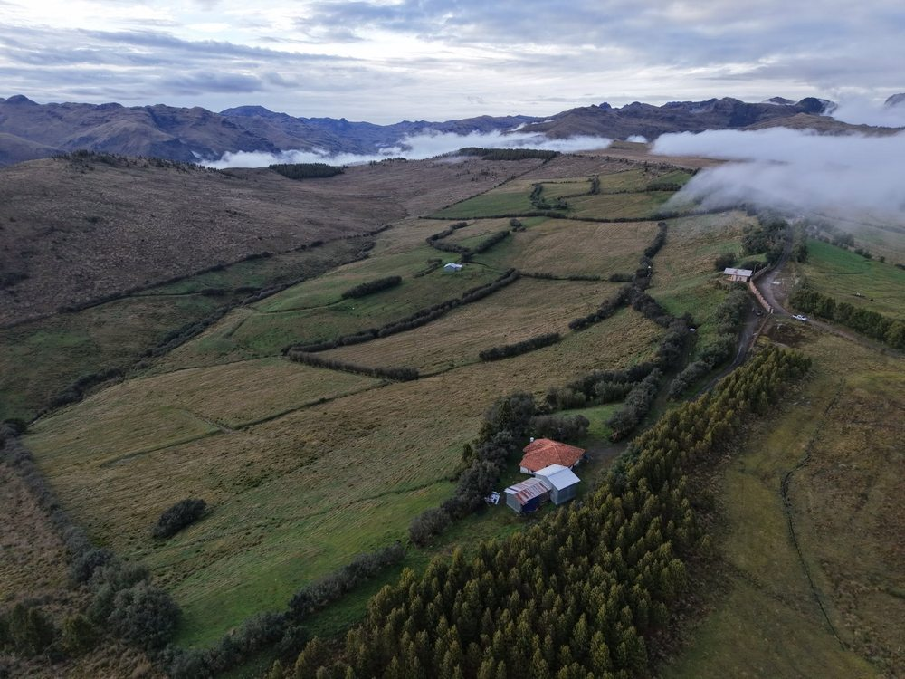
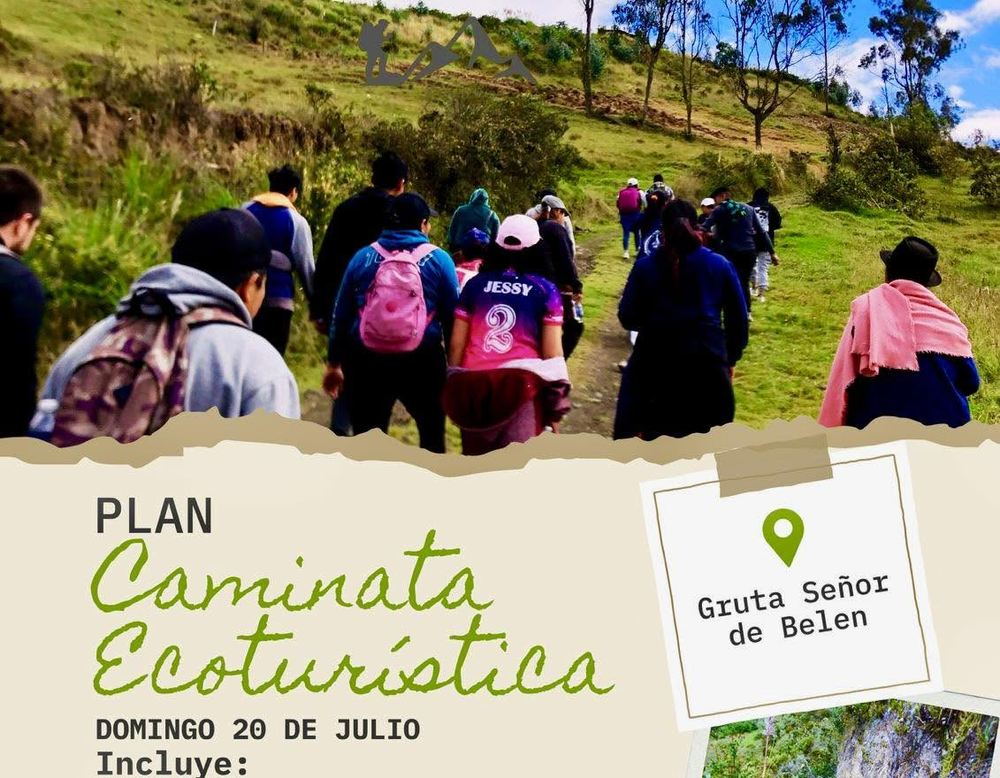

Pregón de fiestas de la Virgen del Rocío
Procesión desde el barrio San Antonio hasta el Santuario en honor a la Virgen del Rocío.
Santuario de la Virgen del Rocío, Biblián
Senderismo y trail de unos 12 km, ida y vuelta, por el Bosque Protector Cubilán, en Sageo. Es un bosque nublado a 3.500 msnm, con 990 hectáreas de flora y fauna. Ve a tu ritmo, corriendo o caminando: conecta, respira y disfruta.

Pasa por la puerta de ingreso: lo pidió la misma comunidad para cuidar el bosque.
Nada de motos: dañaban el páramo y la flora.
Si necesitas guía, comida o dónde dormir, pregúntale a la comuna.
Procesión desde el barrio San Antonio hasta el Santuario en honor a la Virgen del Rocío.
Santuario de la Virgen del Rocío, Biblián

Dos días de campamento en el páramo de Padre Rumi, con una pachamanca: comida andina cocinada bajo tierra con piedras calientes.
Padre Rumi, Jerusalén

Una caminata guiada desde Nazón hasta el páramo de Tuñi Sagre.
Tuñi Sagre, Nazón

Caminata a la cueva del Señor de Belén y al mirador del cerro Shuriray.
Gruta Señor de Belén, Turupamba